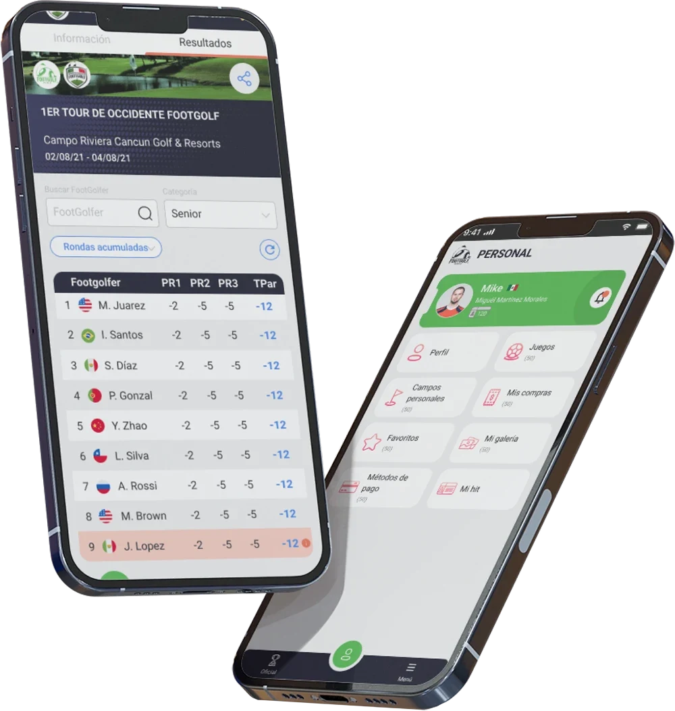
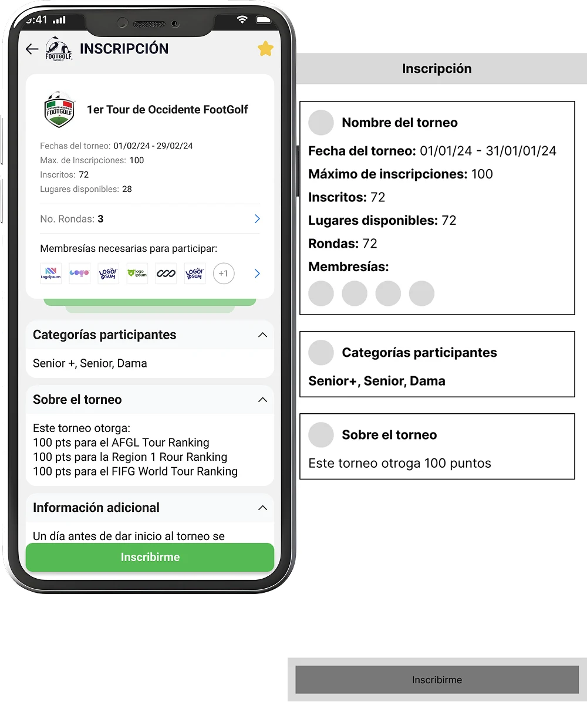
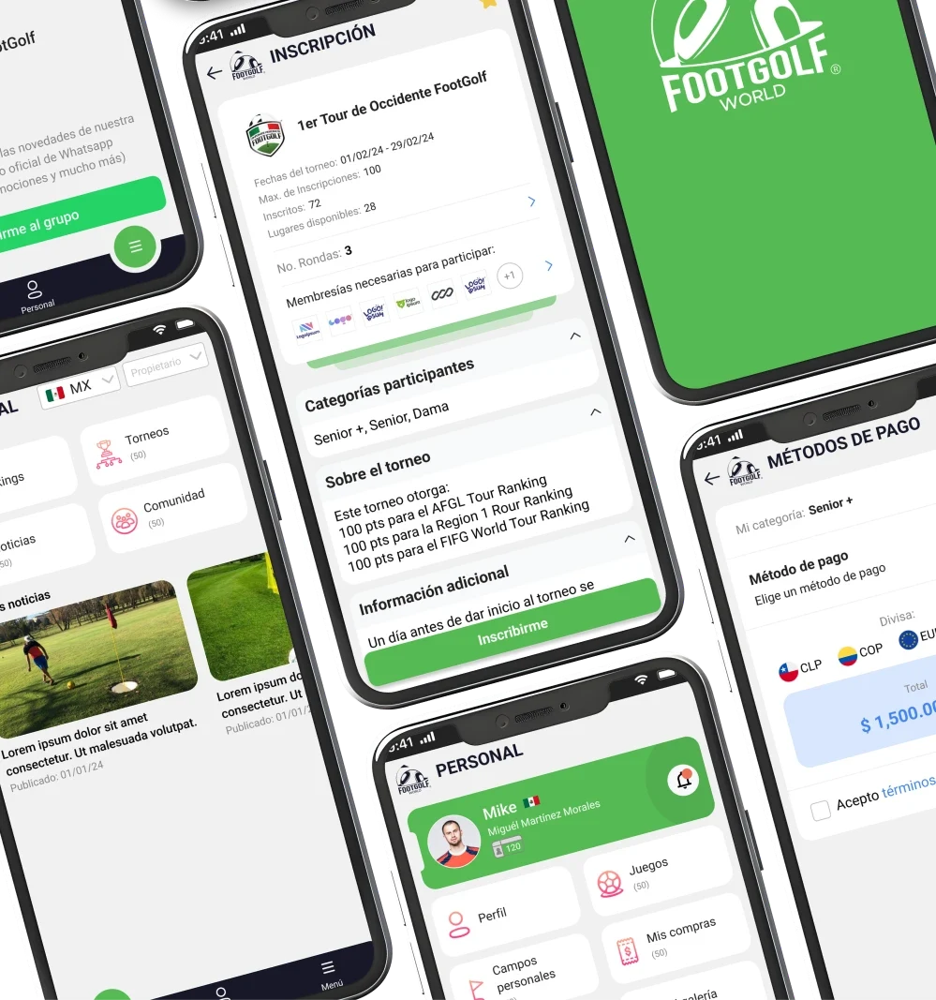
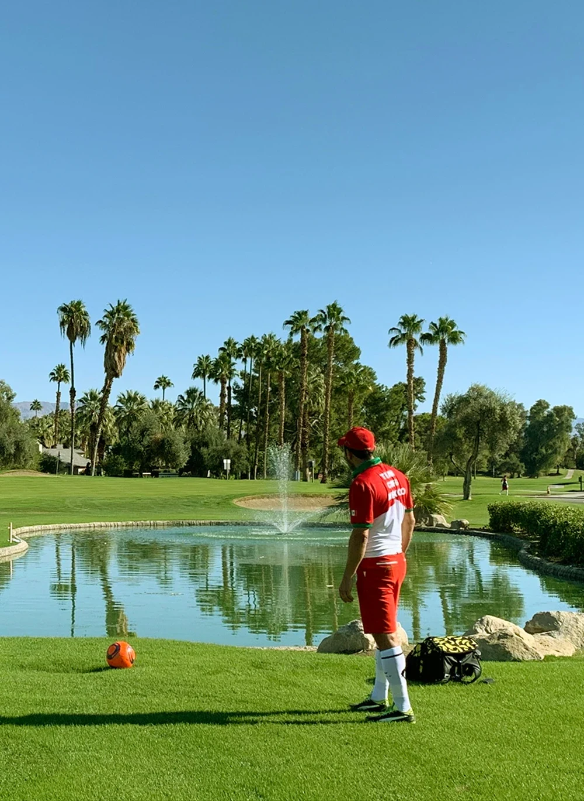

FootGolf World
Una app para que jugadores y aficionados se inscriban a torneos, sigan sus juegos en vivo y conozcan su posición en el ranking.

El FootGolf, mezcla de fútbol y golf, crece rápido, pero no había una plataforma digital para organizar, participar y seguir eventos. Los jugadores necesitaban un lugar central para torneos y rankings; los aficionados, una forma sencilla de armar sus propios juegos.
Registrarse en torneos oficiales, seguir su desempeño y comparar su ranking con otros jugadores.
Crear juegos personalizados, sin afectar el ranking oficial, y seguirlos en vivo.
Una experiencia fluida e intuitiva que invite a participar activamente.
Que la app se vuelva la herramienta esencial de la comunidad: más participación y torneos más fáciles de organizar.
AFGL BlueGolf (web) y American FootGolf League (app), con años de uso sobre todo en Estados Unidos.
Design Thinking
en 5 fases
Empatizar
Entrevisté a 3 stakeholders y 5 usuarios sobre la visión del producto, las funciones imprescindibles para la primera versión, su frecuencia de juego y qué los motivaría a usar la app.

Definir
Todo lo recopilado en las entrevistas se agrupó en un affinity map de éxitos, oportunidades y puntos de dolor. Así detecté patrones como torneos difíciles de encontrar y la falta de estadísticas avanzadas.
Registro y seguimiento de torneos fácil y rápido.
Affinity mapFácil creación de juegos personales.
Affinity mapConocer las posiciones de los footgolfers en el ranking.
Affinity mapBuscar e identificar de forma sencilla jugadores en el ranking.
Affinity mapQue la app sea rápida.
Affinity mapTener notificaciones en tiempo real.
Affinity mapAñadir más opciones de personalización para los juegos.
Affinity mapTener estadísticas avanzadas de jugadores.
Affinity mapCompartir resultados mediante redes sociales.
Affinity mapIncorporar tutoriales o guías sobre el juego para nuevos usuarios.
Affinity mapComprar uniformes, balones, etc. a través de la app.
Affinity mapUna sección para ubicar los campos cercanos a mí.
Affinity mapBuscar torneos por ubicación y fecha.
Affinity mapChatear con otros usuarios para fomentar la comunidad.
Affinity mapPreocupación por la estabilidad de la app durante los eventos en vivo.
Affinity mapFalta de integración con redes sociales para compartir logros.
Affinity mapAlgunos usuarios reportan dificultades para seguir los juegos en vivo.
Affinity mapEscasa guía o tutoriales dentro de la app para nuevos usuarios.
Affinity mapIdear
Mapa de sitio y wireframes de baja fidelidad con dos mundos en una app: FGW Oficial (rankings, torneos, noticias y comunidad) y FGW Personal (juegos, perfil y galería).

Prototipar
Wireframes de alta fidelidad y un prototipo interactivo en Figma con transiciones para simular la navegación real antes de desarrollar.

Registro y seguimiento de torneos fácil y rápido.
Affinity mapFácil creación de juegos personales.
Affinity mapConocer las posiciones de los footgolfers en el ranking.
Affinity mapBuscar e identificar de forma sencilla jugadores en el ranking.
Affinity mapQue la app sea rápida.
Affinity mapTener notificaciones en tiempo real.
Affinity mapAñadir más opciones de personalización para los juegos.
Affinity mapTener estadísticas avanzadas de jugadores.
Affinity mapCompartir resultados mediante redes sociales.
Affinity mapIncorporar tutoriales o guías sobre el juego para nuevos usuarios.
Affinity mapComprar uniformes, balones, etc. a través de la app.
Affinity mapUna sección para ubicar los campos cercanos a mí.
Affinity mapBuscar torneos por ubicación y fecha.
Affinity mapChatear con otros usuarios para fomentar la comunidad.
Affinity mapPreocupación por la estabilidad de la app durante los eventos en vivo.
Affinity mapFalta de integración con redes sociales para compartir logros.
Affinity mapAlgunos usuarios reportan dificultades para seguir los juegos en vivo.
Affinity mapEscasa guía o tutoriales dentro de la app para nuevos usuarios.
Affinity mapTestear
Prueba de usabilidad con un prototipo interactivo en Figma: 5 usuarios representativos de los perfiles definidos (jugadores competitivos y aficionados) realizaron 5 tareas clave dentro de la aplicación.
| Tarea asignada | Luis30 años | Alejandra28 años | Samuel20 años | Rogelio45 años | Mónica32 años |
|---|---|---|---|---|---|
| Registro en la app | ✓ | ✓ | ✓ | ✓ | ✓ |
| Búsqueda e inscripción a un torneo | ✓ | ✓ | ✓ | ✓ | ✓ |
| Crear un juego personal e invitar amigos | ✕ | ✓ | ✓ | ✕ | ✓ |
| Seguir un juego en vivo | ✓ | ✓ | ✓ | ✕ | ✓ |
| Consultar y comparar rankings | ✓ | ✓ | ✓ | ✓ | ✕ |
Una base sólida para lanzar la app
- Tasa de éxito: El test de usabilidad mostró un 85% de éxito en la realización de tareas clave sin asistencia.
- Adopción: El 75% de los usuarios indicó que utilizaría la app en su versión final.
- Necesidades cubiertas: La app satisfizo las necesidades principales de jugadores competitivos y aficionados con una experiencia intuitiva y agradable.
- Mejora continua: Las entrevistas y pruebas revelaron áreas clave para seguir iterando en futuras versiones.

proyectoBtravel Rewards→